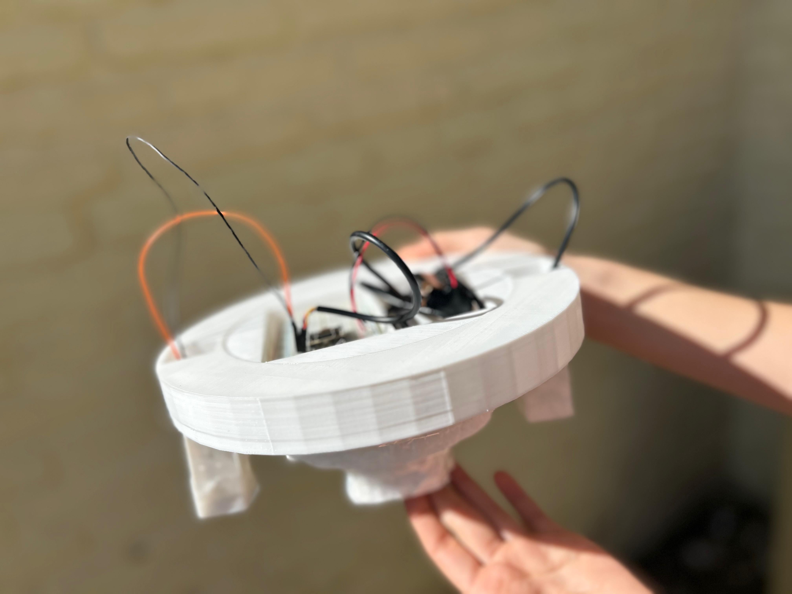
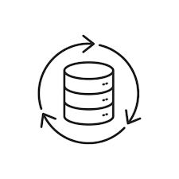

Tu aliado tecnológico
en el cuidado del agua
Somos AquaNova

Dispositivo Inteligente para Monitoreo en Acuicultura
Creado por estudiantes de 6to año de la escuela PROA La Falda
La acuicultura necesita un monitoreo constante para asegurar la salud del ecosistema y la calidad del agua. Este proyecto desarrolla un dispositivo inalámbrico y autónomo que mide en tiempo real los parámetros clave del agua, optimizando el cultivo de especies acuáticas y garantizando su bienestar ambiental.

Recolección de datos
Recolección de datos
Procesamiento
Transmisión Inalámbrica
Visualización y alertas